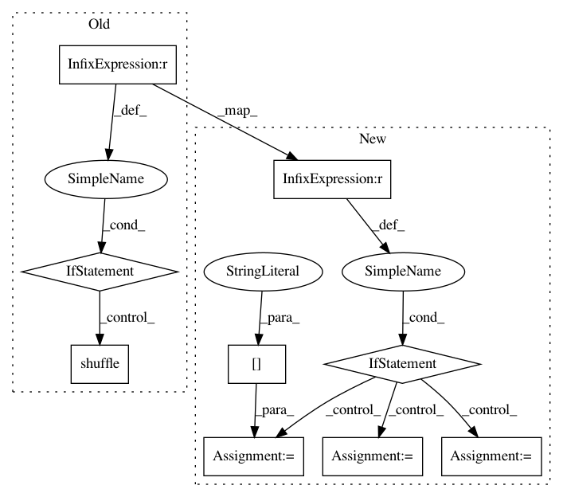

a9f9c5e31b8e55098e980f2e3fbfd80a43fabfc1,nilearn/datasets/func.py,,fetch_cobre,#Any#Any#Any#Any#,1417
Before Change
ids = csv_array["subject_type"]
max_subjects = len(ids)
if n_subjects is not None:
if n_subjects < max_subjects:
// shuffle datasets to have almost equal balance between sch vs ctrl
ids = shuffle(ids, random_state=0, n_samples=n_subjects)
elif n_subjects > max_subjects:
warnings.warn("Warning: there are only %d subjects" % max_subjects)
n_subjects = max_subjects
else:
n_subjects = max_subjects
func_filenames = [("fmri_" + i.decode().strip(" "\"") +
After Change
func_files = _fetch_files(data_dir, func_files, verbose=verbose)
mat_files = _fetch_files(data_dir, mat_files, verbose=verbose)
if n_subjects < max_subjects:
first_split = n_subjects/2
second_split = n_subjects - first_split
func = func_files[0:71][:first_split]
func.extend(func_files[72:146][:second_split])
func_files = func
mats = mat_files[0:71][:first_split]
mats.extend(mat_files[72:146][:second_split])
mat_files = mats
return Bunch(func=func_files, mat_files=mat_files, phenotypic=csv_array,
description=fdescr)
In pattern: SUPERPATTERN
Frequency: 3
Non-data size: 9
Instances
Project Name: nilearn/nilearn
Commit Name: a9f9c5e31b8e55098e980f2e3fbfd80a43fabfc1
Time: 2016-02-16
Author: dkamalakarreddy@gmail.com
File Name: nilearn/datasets/func.py
Class Name:
Method Name: fetch_cobre
Project Name: deepinsight/insightface
Commit Name: faabf5663a0d8fbdee527c03d396106dbd855270
Time: 2019-01-08
Author: guojia@gmail.com
File Name: alignment/data.py
Class Name: FaceSegIter
Method Name: reset
Project Name: deepinsight/insightface
Commit Name: 1399df2342774f9130ed676fd991d63411d3b6b5
Time: 2019-01-08
Author: guojia@gmail.com
File Name: alignment/data.py
Class Name: FaceSegIter
Method Name: reset